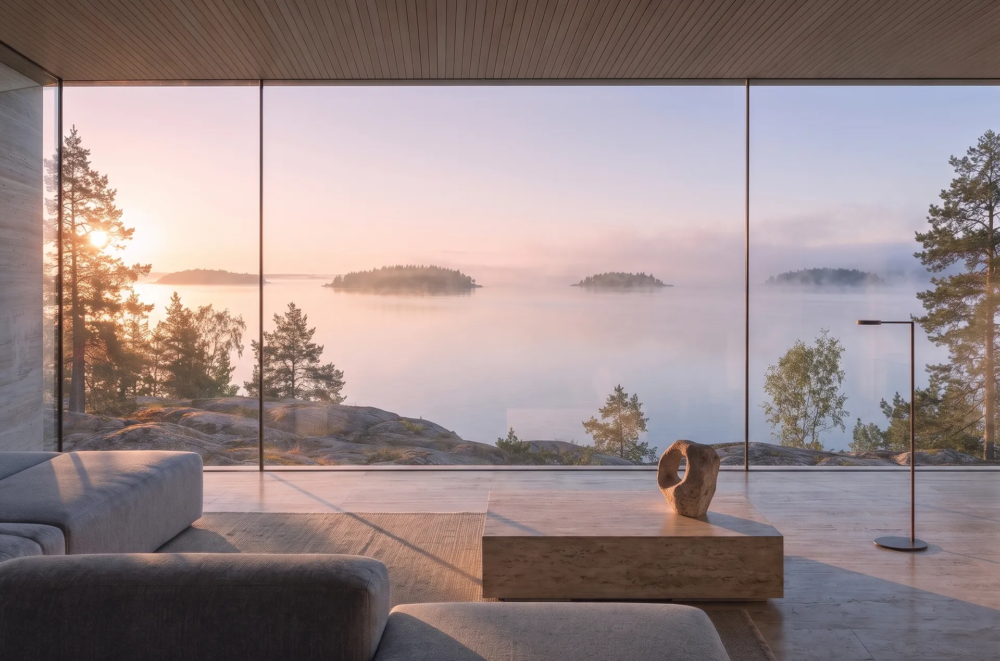
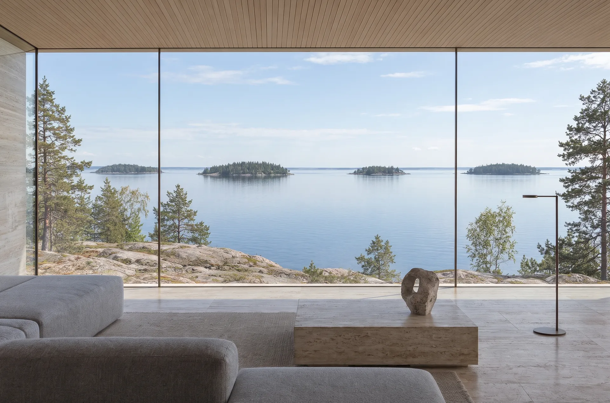
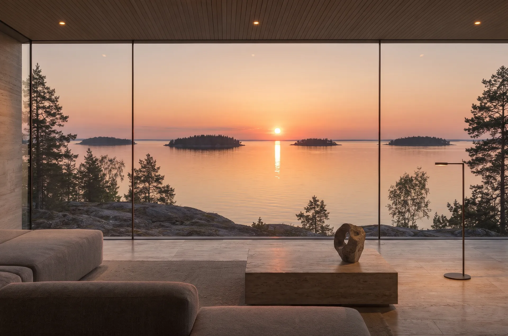
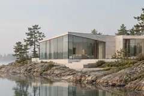
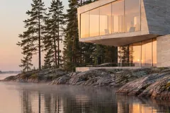
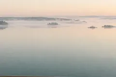
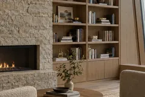

- вилл на мысе
- 5
- до потолка в гостиной
- 4,2м
- фасада из стекла
- 72%
- между соседями
- 60м
- Координаты
- 62°08′ с. ш. 34°01′ в. д.
- Закат сегодня
У каждой виллы свой берег
Выберите виллу на плане мыса. Покажем этажи, площади и куда смотрят окна.
| № | Вилла | м² | Спален | Окна на | Статус |
|---|
Пять граней одного мыса
Мы не рисовали коробку с окнами. Мы гранили дом, как камень. Каждая грань повёрнута к своему часу, и за день свет обходит все комнаты.
Лист 02. Архитектура и материалы


- 07:40Утро. Солнце ещё низко и кладёт на пол длинные тёплые полосы. Над водой держится туман.
- 13:00День. Высокое солнце берёт на себя кровля, в комнате ровный мягкий свет без бликов.
- 20:15Вечер. Солнце садится между островами прямо напротив окна. Камень пола отдаёт тепло до темноты.
Водас трёх сторон
Западные террасы смотрят на открытое озеро. До другого берега четыре километра.
Лист 05. МестоВедомость листов
- 02Архитектура и материалыОдин день в гостиной и четыре материала под лупой.

- 03ГенпланПять участков на мысе и куда смотрит каждый.
- 04ВиллыКварц, Берилл, Топаз, Опал, Агат. Планы этажей и свет в окнах.

- 05Место. Ситуационный планВода с трёх сторон, час до города и год на мысе.

- 06КлубПричал и катер, сауна у воды, гостиная клуба, управляющая компания и охрана.

- 07Частный показВыберите день и свет, встретим у ворот.